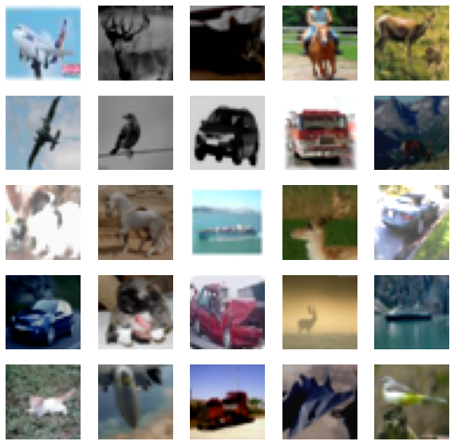
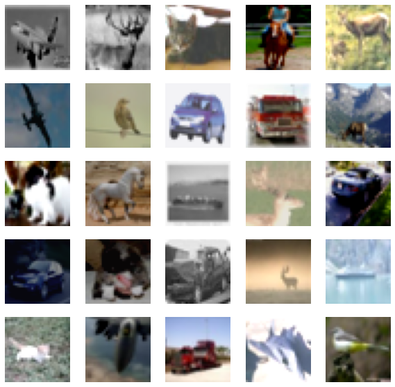
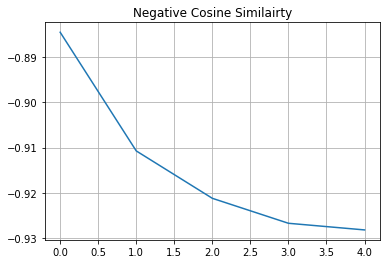

Self-supervised contrastive learning with SimSiam
Author: Sayak Paul
Date created: 2021/03/19
Last modified: 2023/12/29
Description: Implementation of a self-supervised learning method for computer vision.

Self-supervised learning (SSL) is an interesting branch of study in the field of representation learning. SSL systems try to formulate a supervised signal from a corpus of unlabeled data points. An example is we train a deep neural network to predict the next word from a given set of words. In literature, these tasks are known as pretext tasks or auxiliary tasks. If we train such a network on a huge dataset (such as the Wikipedia text corpus) it learns very effective representations that transfer well to downstream tasks. Language models like BERT, GPT-3, ELMo all benefit from this.
Much like the language models we can train computer vision models using similar approaches. To make things work in computer vision, we need to formulate the learning tasks such that the underlying model (a deep neural network) is able to make sense of the semantic information present in vision data. One such task is to a model to contrast between two different versions of the same image. The hope is that in this way the model will have learn representations where the similar images are grouped as together possible while the dissimilar images are further away.
In this example, we will be implementing one such system called SimSiam proposed in Exploring Simple Siamese Representation Learning. It is implemented as the following:
- We create two different versions of the same dataset with a stochastic data augmentation pipeline. Note that the random initialization seed needs to be the same during create these versions.
- We take a ResNet without any classification head (backbone) and we add a shallow fully-connected network (projection head) on top of it. Collectively, this is known as the encoder.
- We pass the output of the encoder through a predictor which is again a shallow fully-connected network having an AutoEncoder like structure.
- We then train our encoder to maximize the cosine similarity between the two different versions of our dataset.
Setup
import os
os.environ["KERAS_BACKEND"] = "tensorflow"
import keras
import keras_cv
from keras import ops
import matplotlib.pyplot as plt
import numpy as np
Define hyperparameters
AUTO = tf.data.AUTOTUNE
BATCH_SIZE = 128
EPOCHS = 5
CROP_TO = 32
SEED = 26
PROJECT_DIM = 2048
LATENT_DIM = 512
WEIGHT_DECAY = 0.0005
Load the CIFAR-10 dataset
(x_train, y_train), (x_test, y_test) = keras.datasets.cifar10.load_data()
print(f"Total training examples: {len(x_train)}")
print(f"Total test examples: {len(x_test)}")
Total training examples: 50000
Total test examples: 10000
Defining our data augmentation pipeline
As studied in SimCLR having the right data augmentation pipeline is critical for SSL systems to work effectively in computer vision. Two particular augmentation transforms that seem to matter the most are: 1.) Random resized crops and 2.) Color distortions. Most of the other SSL systems for computer vision (such as BYOL, MoCoV2, SwAV, etc.) include these in their training pipelines.
strength = [0.4, 0.4, 0.4, 0.1]
random_flip = layers.RandomFlip(mode="horizontal_and_vertical")
random_crop = layers.RandomCrop(CROP_TO, CROP_TO)
random_brightness = layers.RandomBrightness(0.8 * strength[0])
random_contrast = layers.RandomContrast((1 - 0.8 * strength[1], 1 + 0.8 * strength[1]))
random_saturation = keras_cv.layers.RandomSaturation(
(0.5 - 0.8 * strength[2], 0.5 + 0.8 * strength[2])
)
random_hue = keras_cv.layers.RandomHue(0.2 * strength[3], [0,255])
grayscale = keras_cv.layers.Grayscale()
def flip_random_crop(image):
# With random crops we also apply horizontal flipping.
image = random_flip(image)
image = random_crop(image)
return image
def color_jitter(x, strength=[0.4, 0.4, 0.3, 0.1]):
x = random_brightness(x)
x = random_contrast(x)
x = random_saturation(x)
x = random_hue(x)
# Affine transformations can disturb the natural range of
# RGB images, hence this is needed.
x = ops.clip(x, 0, 255)
return x
def color_drop(x):
x = grayscale(x)
x = ops.tile(x, [1, 1, 3])
return x
def random_apply(func, x, p):
if keras.random.uniform([], minval=0, maxval=1) < p:
return func(x)
else:
return x
def custom_augment(image):
# As discussed in the SimCLR paper, the series of augmentation
# transformations (except for random crops) need to be applied
# randomly to impose translational invariance.
image = flip_random_crop(image)
image = random_apply(color_jitter, image, p=0.8)
image = random_apply(color_drop, image, p=0.2)
return image
It should be noted that an augmentation pipeline is generally dependent on various properties of the dataset we are dealing with. For example, if images in the dataset are heavily object-centric then taking random crops with a very high probability may hurt the training performance.
Let's now apply our augmentation pipeline to our dataset and visualize a few outputs.
Convert the data into TensorFlow Dataset objects
Here we create two different versions of our dataset without any ground-truth labels.
ssl_ds_one = tf.data.Dataset.from_tensor_slices(x_train)
ssl_ds_one = (
ssl_ds_one.shuffle(1024, seed=SEED)
.map(custom_augment, num_parallel_calls=AUTO)
.batch(BATCH_SIZE)
.prefetch(AUTO)
)
ssl_ds_two = tf.data.Dataset.from_tensor_slices(x_train)
ssl_ds_two = (
ssl_ds_two.shuffle(1024, seed=SEED)
.map(custom_augment, num_parallel_calls=AUTO)
.batch(BATCH_SIZE)
.prefetch(AUTO)
)
# We then zip both of these datasets.
ssl_ds = tf.data.Dataset.zip((ssl_ds_one, ssl_ds_two))
# Visualize a few augmented images.
sample_images_one = next(iter(ssl_ds_one))
plt.figure(figsize=(10, 10))
for n in range(25):
ax = plt.subplot(5, 5, n + 1)
plt.imshow(sample_images_one[n].numpy().astype("int"))
plt.axis("off")
plt.show()
# Ensure that the different versions of the dataset actually contain
# identical images.
sample_images_two = next(iter(ssl_ds_two))
plt.figure(figsize=(10, 10))
for n in range(25):
ax = plt.subplot(5, 5, n + 1)
plt.imshow(sample_images_two[n].numpy().astype("int"))
plt.axis("off")
plt.show()


Notice that the images in samples_images_one and sample_images_two are essentially
the same but are augmented differently.
Defining the encoder and the predictor
We use an implementation of ResNet20 that is specifically configured for the CIFAR10 dataset. The code is taken from the keras-idiomatic-programmer repository. The hyperparameters of these architectures have been referred from Section 3 and Appendix A of the original paper.
!wget -q https://git.io/JYx2x -O resnet_cifar10_v2.py
import resnet_cifar10_v2
N = 2
DEPTH = N * 9 + 2
NUM_BLOCKS = ((DEPTH - 2) // 9) - 1
def get_encoder():
# Input and backbone.
inputs = layers.Input((CROP_TO, CROP_TO, 3))
x = layers.Rescaling(scale=1.0 / 127.5, offset=-1)(
inputs
)
x = resnet_cifar10_v2.stem(x)
x = resnet_cifar10_v2.learner(x, NUM_BLOCKS)
x = layers.GlobalAveragePooling2D(name="backbone_pool")(x)
# Projection head.
x = layers.Dense(
PROJECT_DIM, use_bias=False, kernel_regularizer=regularizers.l2(WEIGHT_DECAY)
)(x)
x = layers.BatchNormalization()(x)
x = layers.ReLU()(x)
x = layers.Dense(
PROJECT_DIM, use_bias=False, kernel_regularizer=regularizers.l2(WEIGHT_DECAY)
)(x)
outputs = layers.BatchNormalization()(x)
return keras.Model(inputs, outputs, name="encoder")
def get_predictor():
model = keras.Sequential(
[
# Note the AutoEncoder-like structure.
layers.Input((PROJECT_DIM,)),
layers.Dense(
LATENT_DIM,
use_bias=False,
kernel_regularizer=regularizers.l2(WEIGHT_DECAY),
),
layers.ReLU(),
layers.BatchNormalization(),
layers.Dense(PROJECT_DIM),
],
name="predictor",
)
return model
Defining the (pre-)training loop
One of the main reasons behind training networks with these kinds of approaches is to utilize the learned representations for downstream tasks like classification. This is why this particular training phase is also referred to as pre-training.
We start by defining the loss function.
def compute_loss(p, z):
# The authors of SimSiam emphasize the impact of
# the `stop_gradient` operator in the paper as it
# has an important role in the overall optimization.
z = ops.stop_gradient(z)
p = keras.utils.normalize(p, axis=1, order=2)
z = keras.utils.normalize(z, axis=1, order=2)
# Negative cosine similarity (minimizing this is
# equivalent to maximizing the similarity).
return -ops.mean(ops.sum((p * z), axis=1))
We then define our training loop by overriding the train_step() function of the
keras.Model class.
class SimSiam(keras.Model):
def __init__(self, encoder, predictor):
super().__init__()
self.encoder = encoder
self.predictor = predictor
self.loss_tracker = keras.metrics.Mean(name="loss")
@property
def metrics(self):
return [self.loss_tracker]
def train_step(self, data):
# Unpack the data.
ds_one, ds_two = data
# Forward pass through the encoder and predictor.
with tf.GradientTape() as tape:
z1, z2 = self.encoder(ds_one), self.encoder(ds_two)
p1, p2 = self.predictor(z1), self.predictor(z2)
# Note that here we are enforcing the network to match
# the representations of two differently augmented batches
# of data.
loss = compute_loss(p1, z2) / 2 + compute_loss(p2, z1) / 2
# Compute gradients and update the parameters.
learnable_params = (
self.encoder.trainable_variables + self.predictor.trainable_variables
)
gradients = tape.gradient(loss, learnable_params)
self.optimizer.apply_gradients(zip(gradients, learnable_params))
# Monitor loss.
self.loss_tracker.update_state(loss)
return {"loss": self.loss_tracker.result()}
Pre-training our networks
In the interest of this example, we will train the model for only 5 epochs. In reality, this should at least be 100 epochs.
# Create a cosine decay learning scheduler.
num_training_samples = len(x_train)
steps = EPOCHS * (num_training_samples // BATCH_SIZE)
lr_decayed_fn = keras.optimizers.schedules.CosineDecay(
initial_learning_rate=0.03, decay_steps=steps
)
# Create an early stopping callback.
early_stopping = keras.callbacks.EarlyStopping(
monitor="loss", patience=5, restore_best_weights=True
)
# Compile model and start training.
simsiam = SimSiam(get_encoder(), get_predictor())
simsiam.compile(optimizer=keras.optimizers.SGD(lr_decayed_fn, momentum=0.6))
history = simsiam.fit(ssl_ds, epochs=EPOCHS, callbacks=[early_stopping])
# Visualize the training progress of the model.
plt.plot(history.history["loss"])
plt.grid()
plt.title("Negative Cosine Similairty")
plt.show()
Epoch 1/5
391/391 [==============================] - 33s 42ms/step - loss: -0.8973
Epoch 2/5
391/391 [==============================] - 16s 40ms/step - loss: -0.9129
Epoch 3/5
391/391 [==============================] - 16s 40ms/step - loss: -0.9165
Epoch 4/5
391/391 [==============================] - 16s 40ms/step - loss: -0.9176
Epoch 5/5
391/391 [==============================] - 16s 40ms/step - loss: -0.9182

If your solution gets very close to -1 (minimum value of our loss) very quickly with a different dataset and a different backbone architecture that is likely because of representation collapse. It is a phenomenon where the encoder yields similar output for all the images. In that case additional hyperparameter tuning is required especially in the following areas:
- Strength of the color distortions and their probabilities.
- Learning rate and its schedule.
- Architecture of both the backbone and their projection head.
Evaluating our SSL method
The most popularly used method to evaluate a SSL method in computer vision (or any other pre-training method as such) is to learn a linear classifier on the frozen features of the trained backbone model (in this case it is ResNet20) and evaluate the classifier on unseen images. Other methods include fine-tuning on the source dataset or even a target dataset with 5% or 10% labels present. Practically, we can use the backbone model for any downstream task such as semantic segmentation, object detection, and so on where the backbone models are usually pre-trained with pure supervised learning.
# We first create labeled `Dataset` objects.
train_ds = tf.data.Dataset.from_tensor_slices((x_train, y_train))
test_ds = tf.data.Dataset.from_tensor_slices((x_test, y_test))
# Then we shuffle, batch, and prefetch this dataset for performance. We
# also apply random resized crops as an augmentation but only to the
# training set.
train_ds = (
train_ds.shuffle(1024)
.map(lambda x, y: (flip_random_crop(x), y), num_parallel_calls=AUTO)
.batch(BATCH_SIZE)
.prefetch(AUTO)
)
test_ds = test_ds.batch(BATCH_SIZE).prefetch(AUTO)
# Extract the backbone ResNet20.
backbone = keras.Model(
simsiam.encoder.input, simsiam.encoder.get_layer("backbone_pool").output
)
# We then create our linear classifier and train it.
backbone.trainable = False
inputs = layers.Input((CROP_TO, CROP_TO, 3))
x = backbone(inputs, training=False)
outputs = layers.Dense(10, activation="softmax")(x)
linear_model = keras.Model(inputs, outputs, name="linear_model")
# Compile model and start training.
linear_model.compile(
loss="sparse_categorical_crossentropy",
metrics=["accuracy"],
optimizer=keras.optimizers.SGD(lr_decayed_fn, momentum=0.9),
)
history = linear_model.fit(
train_ds, validation_data=test_ds, epochs=EPOCHS, callbacks=[early_stopping]
)
_, test_acc = linear_model.evaluate(test_ds)
print("Test accuracy: {:.2f}%".format(test_acc * 100))
Epoch 1/5
391/391 [==============================] - 7s 11ms/step - loss: 3.8072 - accuracy: 0.1527 - val_loss: 3.7449 - val_accuracy: 0.2046
Epoch 2/5
391/391 [==============================] - 3s 8ms/step - loss: 3.7356 - accuracy: 0.2107 - val_loss: 3.7055 - val_accuracy: 0.2308
Epoch 3/5
391/391 [==============================] - 3s 8ms/step - loss: 3.7036 - accuracy: 0.2228 - val_loss: 3.6874 - val_accuracy: 0.2329
Epoch 4/5
391/391 [==============================] - 3s 8ms/step - loss: 3.6893 - accuracy: 0.2276 - val_loss: 3.6808 - val_accuracy: 0.2334
Epoch 5/5
391/391 [==============================] - 3s 9ms/step - loss: 3.6845 - accuracy: 0.2305 - val_loss: 3.6798 - val_accuracy: 0.2339
79/79 [==============================] - 1s 7ms/step - loss: 3.6798 - accuracy: 0.2339
Test accuracy: 23.39%
Notes
- More data and longer pre-training schedule benefit SSL in general.
- SSL is particularly very helpful when you do not have access to very limited labeled training data but you can manage to build a large corpus of unlabeled data. Recently, using an SSL method called SwAV, a group of researchers at Facebook trained a RegNet on 2 Billion images. They were able to achieve downstream performance very close to those achieved by pure supervised pre-training. For some downstream tasks, their method even outperformed the supervised counterparts. You can check out their paper to know the details.
- If you are interested to understand why contrastive SSL helps networks learn meaningful representations, you can check out the following resources: